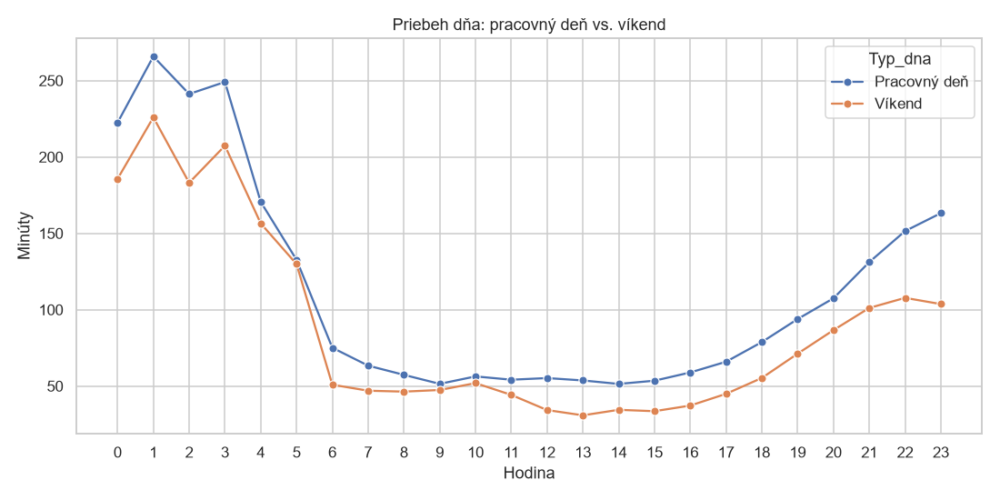
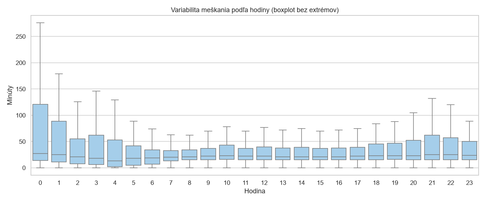
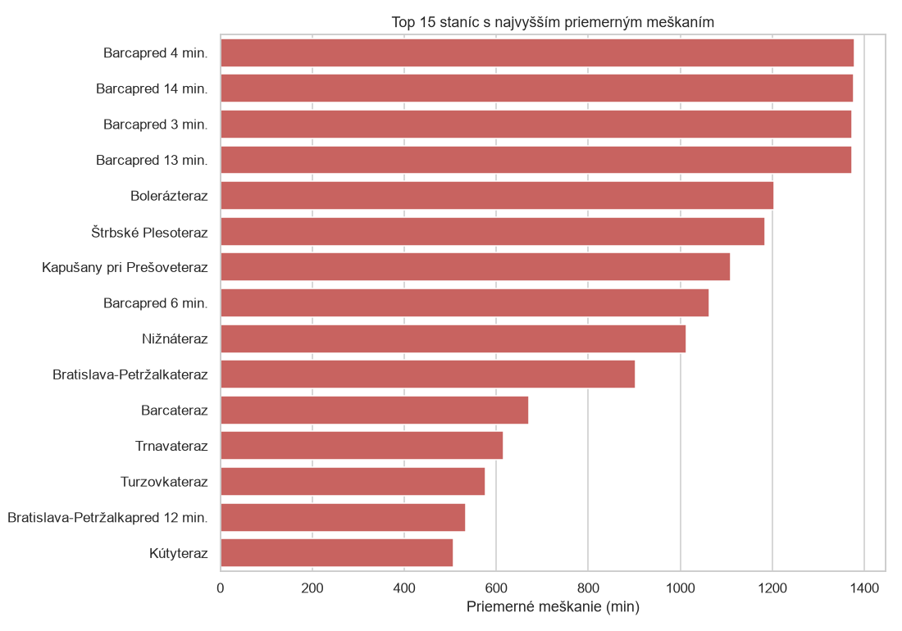

📈 Historický vývoj (denný, 7- a 30-dňový priemer, trend)

Obdobie dát: 23.10.2026 08:57 – 20.11.2026 10:57


| Zaznamov | Priemer | Median | P90 | Max | Std | Meskaju_pct | Nad5_pct | Nad15_pct | Nad60_pct | |
|---|---|---|---|---|---|---|---|---|---|---|
| Mesiac | ||||||||||
| 2026-10 | 17260 | 66.60 | 20.00 | 120.00 | 2176 | 193.21 | 96.23 | 85.27 | 67.36 | 13.24 |
| 2026-11 | 66339 | 101.23 | 23.00 | 150.00 | 2780 | 274.93 | 93.21 | 84.98 | 72.59 | 19.85 |


| Zaznamov | Priemer | Median | P90 | Max | Std | Meskaju_pct | Nad5_pct | Nad15_pct | Nad60_pct | |
|---|---|---|---|---|---|---|---|---|---|---|
| Den | ||||||||||
| Pondelok | 10649 | 73.47 | 21.00 | 128.00 | 1374 | 200.28 | 91.26 | 78.77 | 67.78 | 14.93 |
| Utorok | 16657 | 96.72 | 23.00 | 177.00 | 2085 | 241.88 | 95.16 | 86.56 | 75.22 | 17.29 |
| Streda | 13187 | 133.82 | 24.00 | 154.00 | 2779 | 362.61 | 93.82 | 85.02 | 71.92 | 26.08 |
| Štvrtok | 12450 | 78.32 | 24.00 | 132.00 | 1707 | 197.55 | 93.38 | 88.10 | 76.69 | 20.68 |
| Piatok | 12404 | 103.57 | 22.00 | 154.00 | 2780 | 296.77 | 96.73 | 88.87 | 73.52 | 17.33 |
| Sobota | 8723 | 89.58 | 20.00 | 148.00 | 2542 | 260.03 | 92.53 | 83.61 | 63.40 | 16.87 |
| Nedeľa | 9529 | 69.84 | 21.00 | 124.00 | 1491 | 187.85 | 92.45 | 81.74 | 66.63 | 14.11 |




| Zaznamov | Priemer | Median | P90 | Max | Std | Meskaju_pct | Nad5_pct | Nad15_pct | Nad60_pct | |
|---|---|---|---|---|---|---|---|---|---|---|
| Cast_dna | ||||||||||
| Noc (0–5) | 12560 | 205.66 | 21.00 | 1,096.10 | 2441 | 445.46 | 86.62 | 77.68 | 60.57 | 26.21 |
| Ranná špička (6–9) | 13151 | 57.29 | 21.00 | 78.00 | 2780 | 227.95 | 92.79 | 83.93 | 70.19 | 13.22 |
| Dopoludnie/popoludnie (10–15) | 24660 | 50.99 | 22.00 | 124.00 | 2542 | 136.05 | 95.34 | 86.15 | 73.62 | 15.29 |
| Popoludňajšia špička (16–19) | 17023 | 69.79 | 22.00 | 142.00 | 2096 | 165.71 | 95.56 | 85.84 | 74.34 | 17.38 |
| Večer (20–23) | 16205 | 128.55 | 24.00 | 485.20 | 2545 | 286.11 | 96.16 | 89.13 | 74.85 | 22.77 |


| Percentil | Minuty |
|---|---|
| P25 | 15.00 |
| P50 | 22.00 |
| P75 | 44.00 |
| P90 | 142.00 |
| P95 | 517.00 |
| P99 | 1,362.00 |
| P99.9 | 2,330.40 |
| Zaznamov | Podiel_% | |
|---|---|---|
| Kategoria | ||
| Včas (0) | 5154 | 6.17 |
| 1–5 min | 7352 | 8.79 |
| 6–15 min | 11314 | 13.53 |
| 16–30 min | 30468 | 36.45 |
| 31–60 min | 13861 | 16.58 |
| 60+ min | 15450 | 18.48 |


| Zaznamov | Priemer | Median | P90 | Max | Std | Meskaju_pct | Nad5_pct | Nad15_pct | Nad60_pct | |
|---|---|---|---|---|---|---|---|---|---|---|
| Stanica_Poloha | ||||||||||
| Barcapred 4 min. | 25 | 1,377.72 | 1,373.00 | 1,373.00 | 1491 | 23.60 | 100.00 | 100.00 | 100.00 | 100.00 |
| Barcapred 14 min. | 26 | 1,377.54 | 1,373.00 | 1,373.00 | 1491 | 23.14 | 100.00 | 100.00 | 100.00 | 100.00 |
| Barcapred 3 min. | 18 | 1,374.00 | 1,374.00 | 1,374.00 | 1374 | 0.00 | 100.00 | 100.00 | 100.00 | 100.00 |
| Barcapred 13 min. | 18 | 1,373.89 | 1,374.00 | 1,374.00 | 1374 | 0.47 | 100.00 | 100.00 | 100.00 | 100.00 |
| Bolerázteraz | 280 | 1,199.68 | 1,206.00 | 2,307.00 | 2776 | 805.18 | 100.00 | 100.00 | 99.29 | 89.64 |
| Štrbské Plesoteraz | 93 | 1,184.03 | 1,211.00 | 1,955.00 | 2172 | 577.94 | 100.00 | 100.00 | 100.00 | 100.00 |
| Kapušany pri Prešoveteraz | 330 | 1,109.39 | 1,109.50 | 1,967.50 | 2212 | 636.44 | 100.00 | 100.00 | 99.70 | 96.67 |
| Turzovkateraz | 178 | 1,102.67 | 992.00 | 2,420.00 | 2777 | 887.21 | 100.00 | 100.00 | 99.44 | 87.64 |
| Barcapred 6 min. | 5 | 1,062.80 | 1,097.00 | 1,371.60 | 1372 | 328.96 | 100.00 | 100.00 | 100.00 | 100.00 |
| Nižnáteraz | 105 | 1,012.72 | 990.00 | 1,892.60 | 2080 | 626.79 | 100.00 | 100.00 | 100.00 | 93.33 |
| Bratislava-Petržalkateraz | 392 | 897.40 | 622.00 | 2,185.50 | 2571 | 813.21 | 100.00 | 100.00 | 98.72 | 81.38 |
| Barcateraz | 3860 | 676.70 | 647.00 | 1,242.00 | 1485 | 410.41 | 100.00 | 100.00 | 99.72 | 91.53 |
| Trnavateraz | 206 | 602.06 | 278.00 | 1,718.00 | 2163 | 665.06 | 100.00 | 100.00 | 96.60 | 65.05 |
| Bratislava-Petržalkapred 12 min. | 5 | 533.00 | 17.00 | 1,562.20 | 2579 | 1,143.78 | 100.00 | 100.00 | 80.00 | 20.00 |
| Kútyteraz | 392 | 493.62 | 144.50 | 1,729.00 | 2540 | 695.78 | 100.00 | 100.00 | 90.56 | 55.10 |
| Trenčínteraz | 351 | 453.55 | 156.00 | 1,333.00 | 1953 | 534.39 | 100.00 | 100.00 | 99.43 | 64.67 |
| Dunajská Stredateraz | 61 | 419.34 | 390.00 | 870.00 | 990 | 322.38 | 100.00 | 100.00 | 98.36 | 75.41 |
| Podunajské Biskupiceteraz | 150 | 411.49 | 88.00 | 1,233.00 | 1562 | 493.85 | 100.00 | 100.00 | 99.33 | 50.00 |
| Bratislava-Petržalkapred 2 min. | 7 | 404.14 | 25.00 | 1,113.80 | 2579 | 960.00 | 100.00 | 100.00 | 85.71 | 28.57 |
| Košiceteraz | 911 | 361.79 | 133.00 | 1,102.00 | 1372 | 425.55 | 100.00 | 100.00 | 97.59 | 54.45 |
| Trenčínpred 10 min. | 7 | 306.71 | 31.00 | 805.80 | 1953 | 725.95 | 100.00 | 100.00 | 100.00 | 14.29 |
| Podunajské Biskupicepred 3 min. | 6 | 281.83 | 24.00 | 803.50 | 1569 | 630.63 | 100.00 | 100.00 | 100.00 | 16.67 |
| Nižná Myšľateraz | 53 | 261.87 | 153.00 | 697.80 | 851 | 240.25 | 100.00 | 100.00 | 100.00 | 73.58 |
| Skalica na Slovenskuteraz | 33 | 247.00 | 254.00 | 502.00 | 534 | 179.59 | 100.00 | 100.00 | 100.00 | 72.73 |
| Čaňateraz | 220 | 236.69 | 43.00 | 884.00 | 1343 | 364.20 | 100.00 | 100.00 | 99.55 | 37.27 |
| Zaznamov | Priemer | Median | P90 | Max | Std | Meskaju_pct | Nad5_pct | Nad15_pct | Nad60_pct | |
|---|---|---|---|---|---|---|---|---|---|---|
| Stanica_Poloha | ||||||||||
| 0 | 1083 | 0.00 | 0.00 | 0.00 | 0 | 0.00 | 0.00 | 0.00 | 0.00 | 0.00 |
| 1 | 1466 | 5.25 | 1.00 | 14.00 | 100 | 7.35 | 54.84 | 38.34 | 7.37 | 0.14 |
| Žilina | 61 | 7.02 | 0.00 | 24.00 | 61 | 12.23 | 47.54 | 31.15 | 18.03 | 1.64 |
| Výh. Ružín | 49 | 7.61 | 3.00 | 19.20 | 61 | 12.05 | 85.71 | 36.73 | 14.29 | 2.04 |
| 6 | 687 | 8.18 | 4.00 | 13.40 | 85 | 12.75 | 100.00 | 26.49 | 9.17 | 1.60 |
| 4 | 981 | 8.36 | 3.00 | 26.00 | 80 | 13.81 | 100.00 | 22.32 | 14.37 | 1.02 |
| 7 | 527 | 8.55 | 5.00 | 16.40 | 87 | 11.29 | 100.00 | 30.55 | 10.63 | 0.95 |
| 2 | 1305 | 8.73 | 1.00 | 25.00 | 66 | 11.03 | 99.92 | 36.86 | 26.74 | 0.08 |
| 5 | 808 | 8.96 | 3.00 | 31.60 | 71 | 14.19 | 100.00 | 21.16 | 14.48 | 0.99 |
| 9 | 367 | 9.15 | 6.00 | 11.00 | 75 | 10.74 | 100.00 | 69.48 | 7.36 | 2.18 |
| 3 | 1164 | 9.15 | 2.00 | 33.00 | 60 | 13.09 | 100.00 | 30.24 | 22.42 | 0.00 |
| Dubnica nad Váhom | 26 | 9.23 | 5.50 | 24.50 | 40 | 10.98 | 65.38 | 50.00 | 26.92 | 0.00 |
| 8 | 429 | 9.33 | 6.00 | 15.20 | 80 | 12.19 | 100.00 | 62.70 | 10.02 | 2.56 |
| Výh. Plevník-Drienové | 58 | 9.59 | 1.00 | 24.80 | 71 | 17.75 | 53.45 | 29.31 | 22.41 | 3.45 |
| 10 | 316 | 9.96 | 7.00 | 13.00 | 90 | 10.22 | 100.00 | 89.56 | 6.65 | 1.58 |

| Zaznamov | Priemer | Median | P90 | Max | Std | Meskaju_pct | Nad5_pct | Nad15_pct | Nad60_pct | |
|---|---|---|---|---|---|---|---|---|---|---|
| Vlak | ||||||||||
| Os 4010smer Makov | 141 | 1,382.47 | 1,367.00 | 2,527.00 | 2780 | 816.56 | 100.00 | 100.00 | 100.00 | 95.74 |
| Os 8102smer Štrbské Pleso | 94 | 1,194.59 | 1,216.00 | 1,964.70 | 2176 | 583.86 | 100.00 | 100.00 | 100.00 | 100.00 |
| REx 7781smer Bratislava-Petržalka | 134 | 1,186.72 | 1,221.00 | 2,303.00 | 2545 | 814.09 | 100.00 | 100.00 | 98.51 | 85.82 |
| Os 9217smer Bardejov | 113 | 1,136.29 | 1,122.00 | 2,050.00 | 2217 | 654.63 | 100.00 | 100.00 | 100.00 | 96.46 |
| Os 9108smer Prešov | 106 | 1,091.77 | 1,102.00 | 1,942.00 | 2162 | 615.23 | 100.00 | 100.00 | 100.00 | 97.17 |
| REx 7720smer Bratislava-Petržalka št. - Wien Hauptbahnhof (in Wbf | 176 | 1,066.15 | 876.00 | 2,296.00 | 2579 | 805.62 | 100.00 | 100.00 | 100.00 | 93.18 |
| Os 9209smer Bardejov | 123 | 1,056.17 | 1,012.00 | 2,028.00 | 2217 | 682.98 | 100.00 | 100.00 | 99.19 | 97.56 |
| Os 7923smer Trstená | 108 | 1,004.12 | 985.00 | 1,923.70 | 2085 | 641.28 | 100.00 | 100.00 | 98.15 | 91.67 |
| Os 2652smer Senica | 213 | 910.48 | 636.00 | 2,324.00 | 2779 | 918.44 | 100.00 | 100.00 | 93.90 | 63.85 |
| Os 2616smer Kúty | 194 | 856.48 | 625.00 | 2,177.00 | 2542 | 848.39 | 100.00 | 100.00 | 97.94 | 63.92 |
| Os 2624smer Kúty | 192 | 784.31 | 511.00 | 2,065.00 | 2428 | 806.01 | 100.00 | 100.00 | 100.00 | 60.94 |
| Os 5315smer Trenčín | 207 | 722.67 | 643.00 | 1,577.00 | 1953 | 573.33 | 100.00 | 100.00 | 97.58 | 82.13 |
| EC 189 HORNÁDsmer Čaňa št. hr. - Budapest-Keleti | 1486 | 702.49 | 727.00 | 1,257.00 | 1378 | 413.96 | 100.00 | 100.00 | 99.93 | 92.80 |
| EC 191 HORNÁDsmer Čaňa št. hr. - Budapest-Keleti | 1466 | 701.77 | 726.50 | 1,257.00 | 1378 | 413.09 | 100.00 | 100.00 | 100.00 | 92.97 |
| EC 193 HORNÁDsmer Čaňa št. hr. - Budapest-Keleti | 1431 | 700.42 | 657.00 | 1,322.00 | 1491 | 418.88 | 100.00 | 100.00 | 99.93 | 92.87 |
| Os 2627smer Trnava | 191 | 617.75 | 253.00 | 1,803.00 | 2167 | 705.06 | 100.00 | 100.00 | 94.76 | 53.93 |
| Os 4348smer Bratislava hlavná stanica | 119 | 545.71 | 392.00 | 1,344.00 | 1569 | 516.03 | 100.00 | 100.00 | 100.00 | 68.91 |
| Os 4370smer Dunajská Streda | 50 | 505.00 | 505.00 | 881.00 | 990 | 292.76 | 100.00 | 100.00 | 100.00 | 92.00 |
| Ex 13001smer Kúty št. hr. - Praha-Holešovice | 23 | 486.61 | 497.00 | 501.80 | 507 | 29.35 | 100.00 | 100.00 | 100.00 | 100.00 |
| EC 186 HORNÁDsmer Košice | 125 | 393.65 | 133.00 | 1,109.00 | 1344 | 435.19 | 100.00 | 100.00 | 99.20 | 56.80 |
| Zaznamov | Priemer | Median | P90 | Max | Std | Meskaju_pct | Nad5_pct | Nad15_pct | Nad60_pct | |
|---|---|---|---|---|---|---|---|---|---|---|
| Vlak | ||||||||||
| mešká 30-59 minút | 3156 | 3.53 | 2.00 | 8.00 | 53 | 4.54 | 77.25 | 18.31 | 2.95 | 0.00 |
| mešká 60 a viac minút | 3156 | 8.10 | 3.00 | 28.00 | 100 | 14.64 | 78.26 | 27.60 | 13.88 | 1.62 |
| Ex 618 TATRAN | 3167 | 13.69 | 5.00 | 36.00 | 79 | 18.36 | 77.77 | 49.32 | 27.66 | 4.45 |
| Ex 620 TATRAN | 3167 | 16.17 | 7.00 | 30.00 | 141 | 29.05 | 71.42 | 57.63 | 22.99 | 7.96 |
| Ex 610 TATRAN | 3167 | 16.13 | 8.00 | 39.40 | 85 | 20.58 | 76.19 | 58.38 | 36.63 | 8.71 |
| Ex 614 TATRAN | 3167 | 14.99 | 10.00 | 38.00 | 86 | 19.14 | 72.28 | 61.19 | 31.92 | 4.80 |
| mešká 15-29 minút | 3156 | 8.58 | 8.00 | 14.00 | 66 | 6.75 | 95.69 | 66.89 | 8.78 | 0.03 |
| Ex 621 TATRAN | 3167 | 21.48 | 16.00 | 50.00 | 83 | 19.85 | 94.73 | 74.36 | 51.85 | 8.46 |
| mešká 5-14 minút | 3156 | 18.17 | 19.00 | 27.00 | 57 | 7.49 | 96.48 | 93.92 | 66.98 | 0.00 |
| mešká do 5 minút | 3156 | 59.40 | 63.00 | 80.00 | 93 | 19.76 | 96.99 | 96.83 | 93.47 | 59.13 |
| Os 14280 NADsmer Brodské | 9 | 15.00 | 15.00 | 15.00 | 15 | 0.00 | 100.00 | 100.00 | 0.00 | 0.00 |
| Os 2706smer Vrbovce št. hr. - Velká nad Veličkou | 6 | 15.00 | 15.00 | 15.00 | 15 | 0.00 | 100.00 | 100.00 | 0.00 | 0.00 |
| Os 2722smer Vrbovce št. hr. - Velká nad Veličkou | 17 | 15.00 | 15.00 | 15.00 | 15 | 0.00 | 100.00 | 100.00 | 0.00 | 0.00 |
| Os 5113smer Nové Zámky | 11 | 15.18 | 15.00 | 16.00 | 16 | 0.40 | 100.00 | 100.00 | 18.18 | 0.00 |
| Os 3027smer Trnava | 5 | 15.20 | 15.00 | 15.60 | 16 | 0.45 | 100.00 | 100.00 | 20.00 | 0.00 |

| Zaznamov | Priemer | Median | P90 | Max | Std | Meskaju_pct | Nad5_pct | Nad15_pct | Nad60_pct | |
|---|---|---|---|---|---|---|---|---|---|---|
| Typ_vlaku | ||||||||||
| EC | 6244 | 512.72 | 397.50 | 1,227.00 | 1491 | 460.15 | 100.00 | 100.00 | 98.22 | 69.70 |
| REX | 3719 | 139.28 | 26.00 | 264.20 | 2579 | 383.55 | 100.00 | 100.00 | 92.63 | 19.76 |
| OS | 20663 | 116.51 | 23.00 | 153.00 | 2780 | 337.55 | 100.00 | 100.00 | 90.87 | 15.62 |
| EN | 773 | 65.33 | 25.00 | 172.40 | 486 | 95.87 | 100.00 | 100.00 | 93.27 | 18.76 |
| RJ | 2350 | 61.30 | 29.00 | 142.00 | 1253 | 109.36 | 100.00 | 100.00 | 95.19 | 17.45 |
| R | 7005 | 51.98 | 28.00 | 133.00 | 873 | 67.88 | 100.00 | 100.00 | 94.12 | 15.70 |
| RA | 1731 | 49.61 | 29.00 | 137.00 | 259 | 53.94 | 100.00 | 100.00 | 93.30 | 15.66 |
| SC | 484 | 40.93 | 22.00 | 53.00 | 257 | 54.98 | 100.00 | 100.00 | 92.36 | 8.47 |
| EX | 24568 | 30.86 | 17.00 | 78.00 | 606 | 44.71 | 86.13 | 74.33 | 55.63 | 13.23 |
| ZR | 282 | 25.01 | 23.00 | 36.00 | 54 | 8.39 | 100.00 | 100.00 | 96.81 | 0.00 |
| MEŠKÁ | 15780 | 19.56 | 9.00 | 64.00 | 100 | 23.77 | 88.94 | 60.71 | 37.21 | 12.15 |
| Timestamp | Vlak | Stanica_Poloha | Meskanie_Text | Meskanie_Minuty |
|---|---|---|---|---|
| 2026-11-20 08:58 | Os 4010smer Makov | Turzovkapred 7 min. | + 1400 minút= 23 hod, 20 min. | 2780 |
| 2026-11-18 09:17 | Os 2652smer Senica | Bolerázpred 7 min. | + 1399 minút= 23 hod, 19 min. | 2779 |
| 2026-11-20 08:48 | Os 4010smer Makov | Turzovkateraz | + 1397 minút= 23 hod, 17 min. | 2777 |
| 2026-11-18 09:07 | Os 2652smer Senica | Bolerázteraz | + 1396 minút= 23 hod, 16 min. | 2776 |
| 2026-11-20 08:37 | Os 4010smer Makov | Turzovkateraz | + 1387 minút= 23 hod, 7 min. | 2767 |
| 2026-11-18 08:58 | Os 2652smer Senica | Bolerázteraz | + 1386 minút= 23 hod, 6 min. | 2766 |
| 2026-11-20 08:28 | Os 4010smer Makov | Turzovkateraz | + 1377 minút= 22 hod, 57 min. | 2697 |
| 2026-11-18 08:47 | Os 2652smer Senica | Bolerázteraz | + 1376 minút= 22 hod, 56 min. | 2696 |
| 2026-11-20 08:18 | Os 4010smer Makov | Turzovkateraz | + 1367 minút= 22 hod, 47 min. | 2687 |
| 2026-11-18 08:37 | Os 2652smer Senica | Bolerázteraz | + 1366 minút= 22 hod, 46 min. | 2686 |
| 2026-11-20 08:07 | Os 4010smer Makov | Turzovkateraz | + 1357 minút= 22 hod, 37 min. | 2677 |
| 2026-11-18 08:27 | Os 2652smer Senica | Bolerázteraz | + 1356 minút= 22 hod, 36 min. | 2676 |
| 2026-11-20 07:57 | Os 4010smer Makov | Turzovkateraz | + 1347 minút= 22 hod, 27 min. | 2667 |
| 2026-11-20 07:48 | Os 4010smer Makov | Turzovkateraz | + 1337 minút= 22 hod, 17 min. | 2657 |
| 2026-11-18 08:07 | Os 2652smer Senica | Bolerázteraz | + 1336 minút= 22 hod, 16 min. | 2656 |


statistiky/ (CSV)